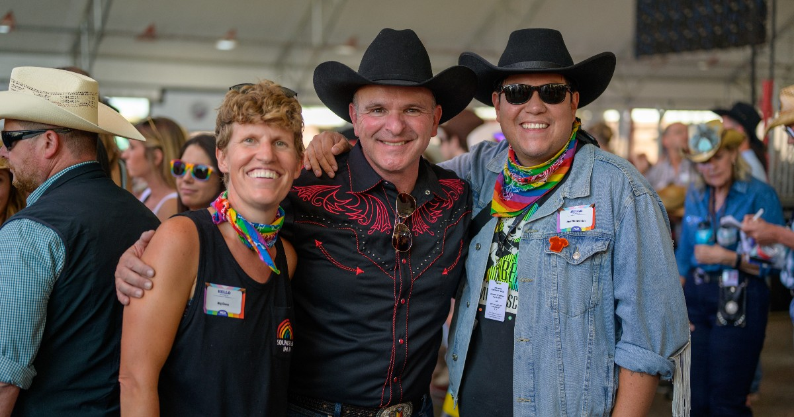
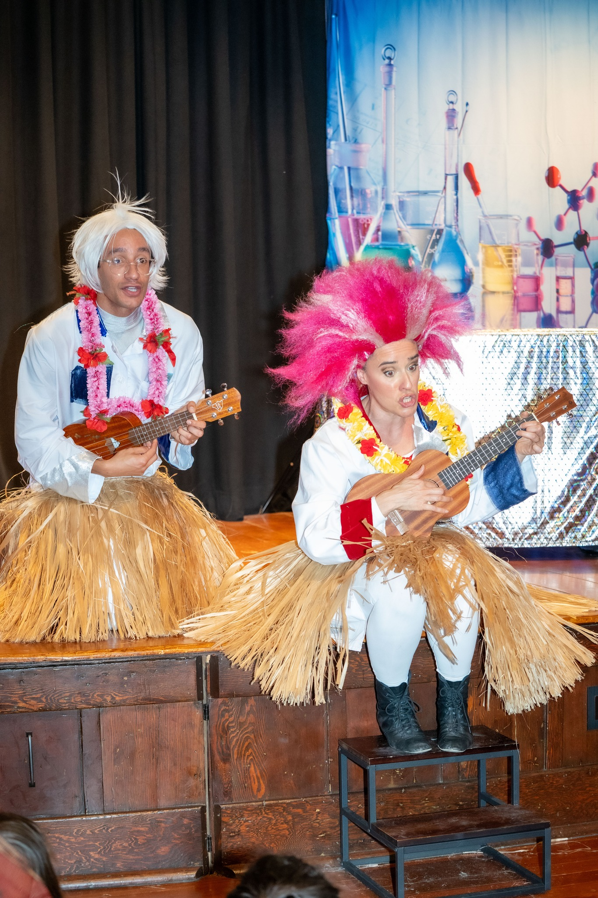

Stabilize
Immediate relief, casework, and navigation to public benefits.

Built To Last Farm, LLC is a U.S. U.S. Limited Liability Company (LLC) public charity (Business ID 001721396) formed to bring order and transparency to community services. Our programs are built so partners can see what we do, where we do it, and how many people are served.
We work at three levels: direct outreach to people in need, coordination with other nonprofits, and reporting back to local governments so they can verify service delivery. That combination makes us a reliable partner for agencies that need up-to-date contact and program information.

Immediate relief, casework, and navigation to public benefits.
Short trainings and employer partnerships to help people re-enter work.
Support for interim sites and housing pathways with clear rules.